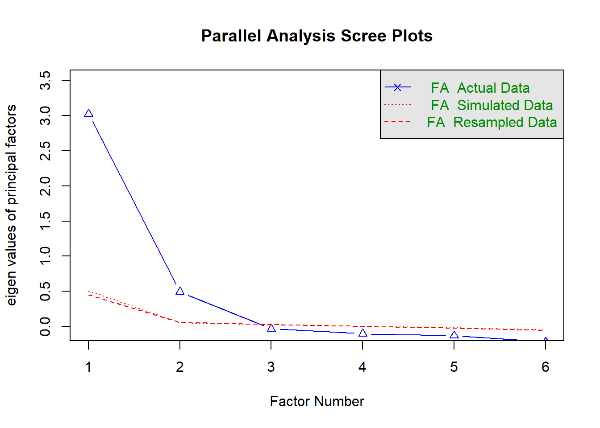
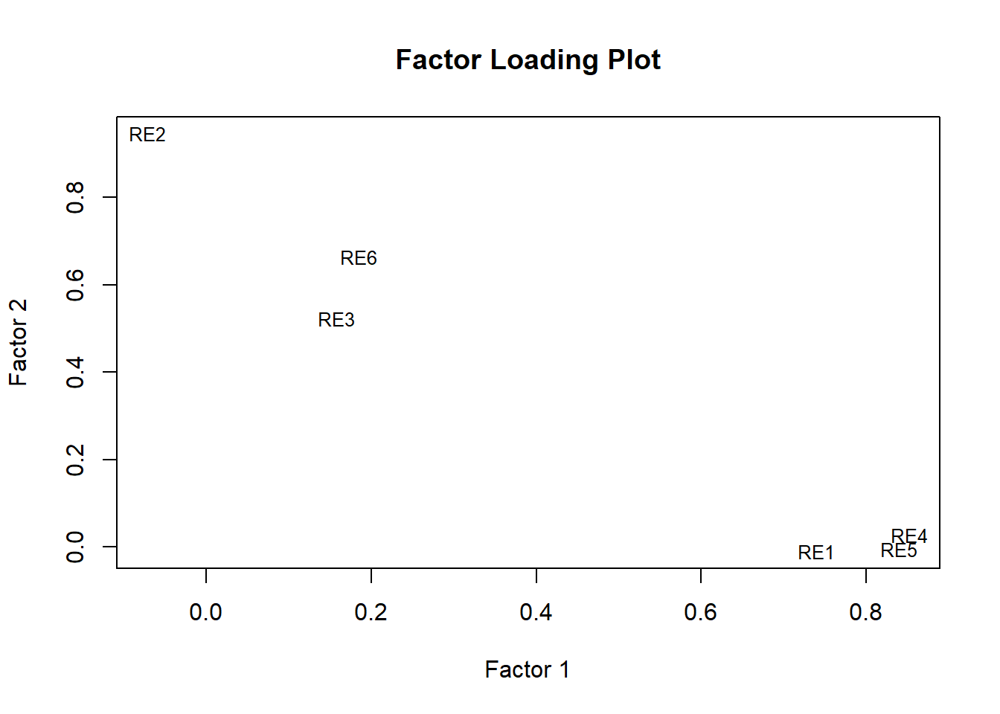
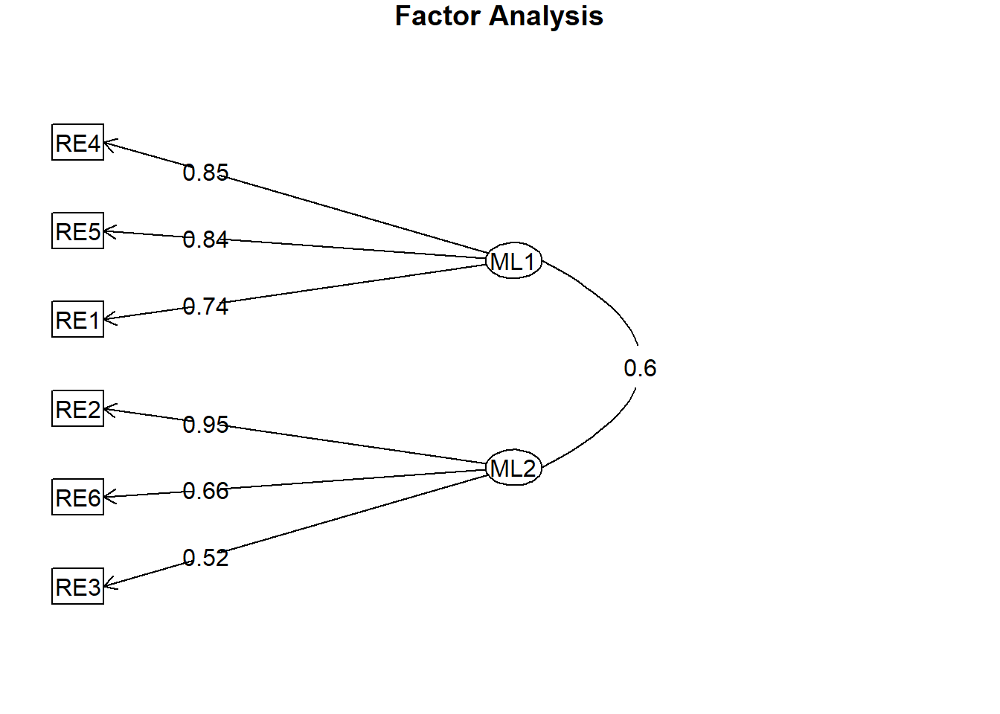

# Load necessary packageslibrary(haven) # for reading SPSS .sav fileslibrary(psych) # for EFA and parallel analysislibrary(GPArotation) # for rotation methods
Warning: package 'GPArotation' was built under R version 4.3.3
Attaching package: 'GPArotation'
The following objects are masked from 'package:psych':
equamax, varimin
library(tidyverse) # for data manipulation
Warning: package 'tidyverse' was built under R version 4.3.3
Warning: package 'tidyr' was built under R version 4.3.3
Warning: package 'purrr' was built under R version 4.3.3
── Conflicts ────────────────────────────────────────── tidyverse_conflicts() ──
✖ ggplot2::%+%() masks psych::%+%()
✖ ggplot2::alpha() masks psych::alpha()
✖ dplyr::filter() masks stats::filter()
✖ dplyr::lag() masks stats::lag()
ℹ Use the conflicted package (<http://conflicted.r-lib.org/>) to force all conflicts to become errors
Prelims
Before interpreting the results of an exploratory factor analysis (EFA), it is essential to consider whether the assumptions underlying the method are reasonably met. One key assumption is that the observed variables are continuous and approximately normally distributed. While EFA is somewhat robust to violations of normality, particularly when using large sample sizes or estimation methods like principal axis factoring, violations can still impact the accuracy of factor loadings and model fit statistics. In this study, the six racial/ethnic identity items (RE1–RE6) were measured on a 5-point Likert scale, which, although technically ordinal, can often be treated as continuous in practice—especially when items have five or more categories and exhibit approximately symmetric distributions.
Another important assumption is multivariate normality, especially when using estimation methods such as maximum likelihood (ML), which relies on normality to produce unbiased estimates and valid fit indices. Although ML estimation was used in this analysis, the relatively large sample size may mitigate concerns about non-normality. If substantial departures from normality were present, alternative estimation methods—such as principal axis factoring or robust maximum likelihood—could offer more reliable results.
In addition to distributional assumptions, EFA assumes that the variables included are conceptually coherent and intercorrelated, such that they are likely to reflect common latent constructs. This assumption is supported in the present analysis, as the six items were explicitly designed to capture theoretically distinct but related dimensions of racial/ethnic identity. Prior research supports a multidimensional structure of racial and ethnic identity, particularly models that distinguish between exploration (active engagement in learning about one’s racial or ethnic group) and commitment or affirmation (a sense of belonging or attachment). These dual processes are foundational in Phinney’s (1992) Multigroup Ethnic Identity Measure (MEIM) and further validated by studies that replicate two-factor or higher-order factor structures across diverse racial/ethnic groups (Roberts et al., 1999; Yip, 2005). Theoretical and empirical support for these dimensions provides a strong rationale for modeling racial/ethnic identity as multifactorial and reinforces the construct validity of the current EFA findings.
Introduction
Across multiple studies, ethnic identity (EI) has consistently been conceptualized as a multidimensional construct encompassing both affective and behavioral components. While specific factor labels varied, each study identified two primary dimensions: one reflecting a sense of affirmation, belonging, or identification with one’s ethnic group, and the other capturing exploration, participation, or engagement in ethnic behaviors. Roberts et al., Spencer et al., and Yancey et al. all found support for this two-factor structure among adolescents, reinforcing the view that EI involves both internalized group attachment and active efforts to understand and engage with one’s cultural background.
This analysis explores the underlying structure of six race/ethnic identity items from the Multigroup Ethnic Identity Measure using the Life and Health of LGBT People Study. These items are measured on a 5-point Likert scale ranging from 1 (“Strongly disagree”) to 5 (“Strongly agree”) and include:
Exploration
These items reflect behavioral and cognitive efforts to learn more about one’s racial/ethnic background:
RE1: I have spent time trying to find out more about my race/ethnic group, such as its history, traditions, and customs.
RE4: I have often done things that will help me understand my race/ethnic background better.
RE5: I have often talked to other people in order to learn more about my race/ethnic group.
Commitment/Belonging
These items express a sense of attachment, emotional connection, or identification with the group:
RE2: I have a strong sense of belonging to my own race/ethnic group.
RE3: I understand pretty well what my race/ethnic group membership means to me.
RE6: I feel a strong attachment towards my own race/ethnic group.
These items reflect cognitive, behavioral, and emotional dimensions of racial/ethnic identity exploration and commitment.
Based on their content and alignment with established ethnic identity frameworks such as Phinney’s MEIM, the six items should be categorized into two dimensions: Exploration and Commitment/Belonging. This categorization is consistent with empirical studies that distinguish between active engagement in learning about one’s ethnicity (Exploration) and emotional or attitudinal connection to the group (Commitment/Belonging).
# Load datasetdata_path <-"C:/Users/barboza-salerno.1/Downloads/life and health of lgbt people study.sav"df <-read_sav(data_path)re_items <- df %>%select(RE1, RE2, RE3, RE4, RE5, RE6)
summary(re_items)
RE1 RE2 RE3 RE4
Min. :1.000 Min. :1.000 Min. :1.000 Min. :1.000
1st Qu.:2.000 1st Qu.:2.000 1st Qu.:3.000 1st Qu.:2.000
Median :4.000 Median :3.000 Median :4.000 Median :3.000
Mean :3.355 Mean :3.205 Mean :3.722 Mean :3.253
3rd Qu.:4.000 3rd Qu.:4.000 3rd Qu.:4.000 3rd Qu.:4.000
Max. :5.000 Max. :5.000 Max. :5.000 Max. :5.000
NA's :15 NA's :19 NA's :19 NA's :22
RE5 RE6
Min. :1.000 Min. :1.000
1st Qu.:2.000 1st Qu.:2.000
Median :3.000 Median :3.000
Mean :3.179 Mean :3.097
3rd Qu.:4.000 3rd Qu.:4.000
Max. :5.000 Max. :5.000
NA's :18 NA's :18
colSums(is.na(re_items))
RE1 RE2 RE3 RE4 RE5 RE6
15 19 19 22 18 18
# Select the six RE variablesre_items <- re_items %>%drop_na() # Remove rows with missing values
KMO and Bartlett’s Test
# Check correlation matrix and Bartlett’s testcor_matrix <-cor(re_items, use ="pairwise.complete.obs")KMO(cor_matrix)
Note: All MSA’s here were acceptable. If they were not, you would want to eliminate those variables with MSA’s below a certain value, perhaps .50 at minimum. You can do this easily as follows:
mydat <- cor_matrix[, KMO(cor_matrix)$MSAi>0.50]
Note: Bartlett’s test compares the correlation matrix to the identity matrix and the null hypothesis is:
\[H_0: I_{mat} = Corr_{mat}\] #### Determine the number of Factors to Extract This is the most important determination for EFA. The goal is to examine the latent structure for a certain number of variables that are coherent, or highly correlated. Therefore, we want to find factors that explain a substantial proportion of variation within the data. Recall there are numerous ways to make such a determination, and none of them are wrong. However, some are more correct than others, and the gold standard is to use parallel analysis as demonstrated below:
fa.parallel(re_items, fa ="fa", n.iter =100, show.legend =TRUE)

Parallel analysis suggests that the number of factors = 2 and the number of components = NA
Lovely, we don’t have to guess, according to the code, we should select 2 factors.
Extract (and rotate) factors
Unless the correlation between factors is low, we want use oblique rotation. Oblique rotations will provide a correlation matrix that describes the relationships between factors. There are two primary selections: Oblique option 1: promax - Promax rotation is better able to handle large datasets and results in greater correlation values between factors.
Oblique option 2: oblimin The direct oblimin rotation approach is less efficient with large datasets, but produces a simpler factor structure.
# Suppose parallel analysis suggests 2 factorsefa_result <-fa(re_items, nfactors =2, rotate ="oblimin", fm ="ml") # or "pa"print(efa_result, sort =TRUE)
Factor Analysis using method = ml
Call: fa(r = re_items, nfactors = 2, rotate = "oblimin", fm = "ml")
Standardized loadings (pattern matrix) based upon correlation matrix
item ML1 ML2 h2 u2 com
RE4 4 0.85 0.03 0.76 0.24 1.0
RE5 5 0.84 0.00 0.70 0.30 1.0
RE1 1 0.74 -0.01 0.54 0.46 1.0
RE2 2 -0.07 0.95 0.82 0.18 1.0
RE6 6 0.18 0.66 0.62 0.38 1.2
RE3 3 0.16 0.52 0.40 0.60 1.2
ML1 ML2
SS loadings 2.13 1.70
Proportion Var 0.36 0.28
Cumulative Var 0.36 0.64
Proportion Explained 0.56 0.44
Cumulative Proportion 0.56 1.00
With factor correlations of
ML1 ML2
ML1 1.0 0.6
ML2 0.6 1.0
Mean item complexity = 1.1
Test of the hypothesis that 2 factors are sufficient.
df null model = 15 with the objective function = 2.84 with Chi Square = 4215.48
df of the model are 4 and the objective function was 0.02
The root mean square of the residuals (RMSR) is 0.01
The df corrected root mean square of the residuals is 0.03
The harmonic n.obs is 1487 with the empirical chi square 9.41 with prob < 0.052
The total n.obs was 1487 with Likelihood Chi Square = 27.13 with prob < 1.9e-05
Tucker Lewis Index of factoring reliability = 0.979
RMSEA index = 0.062 and the 90 % confidence intervals are 0.041 0.086
BIC = -2.09
Fit based upon off diagonal values = 1
Measures of factor score adequacy
ML1 ML2
Correlation of (regression) scores with factors 0.94 0.94
Multiple R square of scores with factors 0.88 0.88
Minimum correlation of possible factor scores 0.75 0.75
# Extract the factor loadings (2 factors)load <-as.matrix(efa_result$loadings[, 1:2])# Assign variable names as rownames if they are missingrownames(load) <-colnames(re_items)# Plot the loadingsplot(load, type ="n", xlab ="Factor 1", ylab ="Factor 2", main ="Factor Loading Plot")text(load, labels =rownames(load), cex =0.8)

fa.diagram(efa_result, simple =FALSE, digits =2)

Column Definitions
ML1 and ML2: Standardized factor loadings on Factor 1 and Factor 2, respectively.
h2 (Communality): Proportion of each item’s variance explained by the two factors combined.
u2 (Uniqueness): Proportion of each item’s variance not explained by the factors (i.e., residual variance).
Interpretation of Each Item
Factor 1 (ML1): Ethnic Identity Exploration
RE4 (“…help me understand my race/ethnic background better”) loads very strongly (0.85) on ML1, suggesting this item taps into active exploration.
RE5 (“…talked to other people…”) loads very strongly (0.84) on ML1—again, an exploratory behavior.
RE1 (“…find out more about my race/ethnic group…”) loads strongly (0.74) on ML1 and near-zero on ML2, reinforcing its alignment with exploration.
These three items all reflect actions taken to explore racial/ethnic identity, justifying labeling this factor Exploration.
RE2 (“…strong sense of belonging…”) loads very strongly (0.95) on ML2 and has virtually no loading on ML1, indicating it is a strong indicator of commitment or attachment.
RE6 (“…strong attachment…”) loads moderately on ML2 (0.66) and weakly on ML1 (0.18), suggesting it primarily reflects commitment but with some overlap.
RE3 (“…understand what race/ethnic group membership means…”) loads moderately on ML2 (0.52), weakly on ML1 (0.16), suggesting a somewhat conceptual but still committed aspect.
Together, these items reflect commitment, attachment, and clarity of identity, aligning factor 2 with Commitment/Belonging to racial identity.
Communalities and Uniqueness
Highest communality: RE2 (0.82) — well-explained by the factors.
Lowest communality: RE3 (0.40) — less well-explained, possibly more complex or ambiguous in meaning.
Uniqueness is highest for RE3 (0.60), suggesting additional variance not captured by the two-factor model (possibly due to conceptual ambiguity or measurement noise).
Summary of Factor Structure
The exploratory factor analysis revealed a clear two-factor solution, aligning with theoretical models of racial/ethnic identity development. The first factor, which we interpret as Exploration, includes items RE1, RE4, and RE5. These items reflect active efforts to learn about one’s racial or ethnic background, such as seeking out cultural knowledge, engaging in learning activities, and conversing with others to deepen understanding. The second factor, labeled Commitment/Belonging, comprises items RE2, RE6, and RE3. These items center on emotional attachment, a sense of belonging, and internal clarity regarding one’s racial or ethnic identity.
This factor structure supports a multidimensional model of racial/ethnic identity, consistent with developmental frameworks such as Phinney’s model. These models conceptualize identity as composed of both exploratory behaviors and a stable sense of affiliation or commitment, recognizing these as distinct yet interrelated domains. The presence of both factors in the data provides empirical support for treating racial/ethnic identity as more than a unidimensional construct.
The use of oblique rotation in the factor analysis was both theoretically and statistically appropriate, as the constructs of exploration and commitment are expected to be correlated. In practice, individuals who engage in active exploration of their racial or ethnic heritage may also develop stronger feelings of attachment and belonging, reflecting the developmental trajectory of identity formation. The factor correlation matrix confirms this relationship: the correlation between the two factors was 0.60, indicating a moderate positive association. This supports the conceptualization of exploration and commitment as distinct yet meaningfully related dimensions of racial/ethnic identity.
Reliability
The next logical question is: How good are these factors? We are interested in whether the variables in each factor form a coherent whole when used together. In other words, are the variances internally consistent between variables in a factor?
One of the most commonly used measures of reliability is Cronbach’s alpha (α), which assesses the internal consistency among a set of items—that is, how closely related the items are as a group. While it is not necessary to conduct an exploratory factor analysis (EFA) in order to calculate Cronbach’s alpha, EFA provides a useful context for introducing this concept. After identifying factors through EFA, Cronbach’s alpha can be used to evaluate the reliability of each factor by assessing how consistently the items within that factor measure the same underlying construct. This helps ensure that the grouped items form a coherent and reliable scale.
To run alpha on your factors you will first need to specify which variables belong to each factor.
So, we simply created two objects corresponding to each of our factors, \(f1\) and \(f2\) with the variables that loaded on each.
Cronbach’s alpha ranges between zero and 1.0. To evaluate the level of reliability, you are looking for values > 0.70 at a minimum. Values between 0.70 and 0.80 are adequate to fair, between 0.80 and 0.90 are good and above .90 are considered excellent.
psych::alpha(f1)
Reliability analysis
Call: psych::alpha(x = f1)
raw_alpha std.alpha G6(smc) average_r S/N ase mean sd median_r
0.85 0.85 0.8 0.66 5.8 0.0067 3.3 1 0.64
95% confidence boundaries
lower alpha upper
Feldt 0.84 0.85 0.86
Duhachek 0.84 0.85 0.86
Reliability if an item is dropped:
raw_alpha std.alpha G6(smc) average_r S/N alpha se var.r med.r
RE1 0.84 0.84 0.72 0.72 5.2 0.0083 NA 0.72
RE4 0.76 0.76 0.61 0.61 3.2 0.0124 NA 0.61
RE5 0.78 0.78 0.64 0.64 3.6 0.0113 NA 0.64
Item statistics
n raw.r std.r r.cor r.drop mean sd
RE1 1487 0.86 0.86 0.73 0.68 3.4 1.2
RE4 1487 0.89 0.90 0.83 0.76 3.2 1.1
RE5 1487 0.89 0.89 0.81 0.74 3.2 1.2
Non missing response frequency for each item
1 2 3 4 5 miss
RE1 0.10 0.18 0.18 0.36 0.18 0
RE4 0.08 0.18 0.30 0.31 0.13 0
RE5 0.09 0.23 0.22 0.32 0.14 0
psych::alpha(f2)
Reliability analysis
Call: psych::alpha(x = f2)
raw_alpha std.alpha G6(smc) average_r S/N ase mean sd median_r
0.81 0.81 0.75 0.58 4.1 0.0085 3.3 0.94 0.55
95% confidence boundaries
lower alpha upper
Feldt 0.79 0.81 0.82
Duhachek 0.79 0.81 0.82
Reliability if an item is dropped:
raw_alpha std.alpha G6(smc) average_r S/N alpha se var.r med.r
RE2 0.65 0.66 0.50 0.50 2.0 0.0174 NA 0.50
RE3 0.82 0.82 0.69 0.69 4.5 0.0095 NA 0.69
RE6 0.70 0.71 0.55 0.55 2.4 0.0151 NA 0.55
Item statistics
n raw.r std.r r.cor r.drop mean sd
RE2 1487 0.89 0.88 0.81 0.73 3.2 1.15
RE3 1487 0.78 0.80 0.63 0.57 3.7 0.97
RE6 1487 0.88 0.86 0.77 0.68 3.1 1.20
Non missing response frequency for each item
1 2 3 4 5 miss
RE2 0.08 0.20 0.30 0.29 0.14 0
RE3 0.03 0.08 0.23 0.46 0.20 0
RE6 0.11 0.19 0.32 0.23 0.14 0
Interpretation
We are concerned with the “raw-alpha” value for the entire factor. This is what is reported in manuscripts as “Cronbach’s α.” That tells us how consistent a set of variables are in generaly. In this case, we are exploring item consistency within each factor. Here, the reliability coefficient (i.e., Cronbach’s α) for Factor 1 (f1) is 0.851 and for f2 its 0.805. This means that the variables that load onto each factor have excellent internally consistency.
The next thing to consider is how internal consistency might change after removing any single variable. To better understand this, we focus on the column titled “raw_alpha” under “Reliability if an iterm is dropped.” For example, the consistency of variables loading on f2 would be higher if we removed RE3 - the effect would be to increase alpha to 0.817. In this case, there is no need to remove a variable to increase reliability because reliability is good with the variable included.